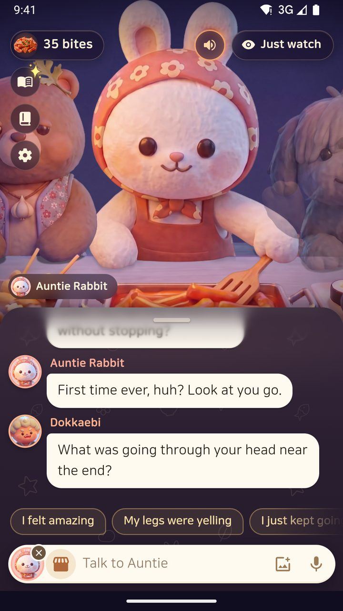
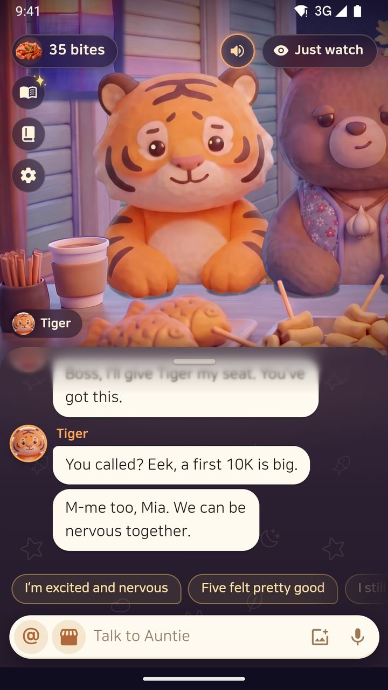
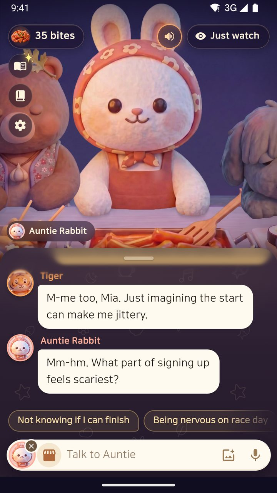
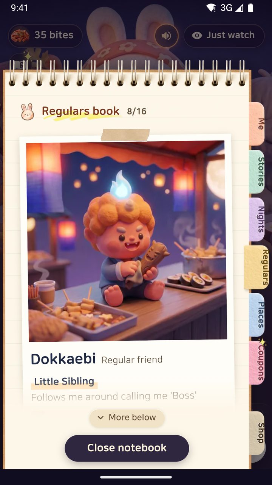

Case 022026Raymind.AI
Chat productsTwo AI services where the conversation is the product
On IsekaiPlay and Auntie Rabbit's Snack Bar, almost everything on screen happens inside the chat. I planned and designed both on my own, and built them with Claude Code. On IsekaiPlay an AI character remembers the player and pays attention to them; on Auntie Rabbit I designed group conversation, where several characters listen to one person, and voice conversation.
isekaiplay.com↗ auntierabbit.com↗- Role
- Product, conversation design, UX and UI, safety rules, development (Claude Code)
- Timeline
- IsekaiPlay from June 2026, Auntie Rabbit from October 2026
- Platform
- IsekaiPlay on the web. Auntie Rabbit as a web beta, with iOS and Android in preparation. Both in Korean, English and Japanese
- Team
- Just me. AI agents write the code, and I review every change


About the project
IsekaiPlay is a single-player AI interactive romance fantasy: you build a relationship with one character in another world that has a status window. The arc of the story is designed in seasons, and each line is generated on the spot from what the player says.
Auntie Rabbit's Snack Bar is a one-to-many place to talk: you drop in at night and tell Auntie Rabbit and her regulars about your day. It is the next step after Paldo Saju and TarotMasters, built on what I learned from the worries people actually shared there, and it starts from the worry itself.
- What I decide
- The principles of the conversation, each character's voice, the screens, the safety rules, the shape of the pricing
- What the agents do
- Code, builds and checks, and a test bench where simulated guests talk to the characters to check quality
- Models
- OpenAI, Gemini, DeepSeek. On IsekaiPlay one call judges what happened and a separate call writes the character's lines
- Live
- isekaiplay.com, auntierabbit.com (Korean tokkiimo.com, Japanese usagiobachan.com)
- The user problem I set out to solve
- AI characters forget what came before and drift into talking plot instead of talking to the player. After playing IsekaiPlay myself, my note read: "The other side doesn't feel like it's paying attention to me." Checking 15 replies on the live service, the character picked up the player's words 15 times out of 15, but only 5 ended where you wanted to know what came next.
- Why it mattered
- When the conversation is the product, the first few turns are everything. In the Japanese edition, 65% of the sessions that reached six turns went on to reach ten. Get through the first few turns and a conversation lasts.
- How I went about it, and what I chose
- Memory is stored as facts and proven within the first session, and the engine makes the character respond to the player every turn. On Auntie Rabbit I moved almost everything, from the menu to payment, into the conversation, and built group conversation and voice you can interrupt.
- Results and what I learned
- On IsekaiPlay, 49% of sessions with a first reply that speaks to the character reached ten turns, and 0% with the old line that just stood there. A rule that ends the first three replies on the character reaching out took a test from 6/15 to 15/15. Auntie Rabbit is still a web beta, so there are no usage numbers here.
that speaks (80) and one that stands (42)
picked up the player's words
to their voice dipping. Stops at 0.38s
Someone who remembers you, and pays attention to you.
I used a number of AI character chat services and took the opposite position. Instead of endless improvisation that forgets what came before, memory is guaranteed and the story is designed. There are no ads, and love and endings are not for sale.
On the day I reworked the feel of the conversation, my note was one line: "In the end it's conversation, and people." From then on, every decision on the screen and in the engine was judged by whether the player feels the other side is looking at them.

Memory as facts, and as proof
What the player says is stored as structured facts and checked for contradictions. Within the first session, the character brings back something the player actually said, so remembering is shown in the conversation rather than claimed.
Seven stages, visible on screen
The relationship moves through seven stages, and the status window above the chat shows the current stage and mood. The character profile keeps the state of the relationship and the moments built together.
The attention contract
The character responds to the player before the plot, gives a small win early and ends where you want to know what happens next. This is not a wish written into a prompt; it is a rule the engine enforces every turn.
Judging and acting are separate
One call judges what happened and another writes the character's lines. When a character says no, it never ends at no: it always closes with a promise of what comes next. Hard safety rules are kept in code, not in the prompt.
The first reply faces the character
Counting by first reply, 49% of sessions with a line that speaks to the character reached ten turns, while all 42 sessions with "I stand in front of them" stopped before ten. So I changed that line, and first-reply choices are now written to speak to the character.
Conversation quality, in numbers
| What I measured | Result |
|---|---|
| Sessions reaching ten turns: a first reply that speaks to the character (80 sessions) | 49% |
| Sessions reaching ten turns: the old line that just stands there (42 sessions) | 0% |
| Replies that picked up the player's words (check on the live service) | 15/15 |
| First three replies ending on the character reaching out (rule test, before and after) | 6/15 → 15/15 |
| Replies where a side character cut in (rule test, before and after) | 2/15 → 0/15 |
First-reply figures split 30 days of real user sessions, test accounts removed (August to September 2026). They are an observation, not a controlled experiment. Reply counts come from the first three replies in five Japanese stories, and the rule in the before-and-after test has not gone live yet.

One person's story, heard by many.
I wrote the experience principles down at the start: "Mobile first, no exceptions. Feels like a game. Warm. Welcoming. Very easy. Almost everything happens in the chat." So the menu, settings, payment and past conversations are, wherever possible, things you say to Auntie or tap inside the chat.
The other principle was "make talking one-to-many the best part." Auntie listens, the regulars chime in, and the guest can call in whichever character they want to talk to.
It exists to comfort, so it never pleads, guilt-trips, plays jealous or scares. Even a crisis said indirectly, like "I wish I didn't wake up tomorrow", is taken seriously and pointed to a crisis line: 109 in Korean, 988 in English. In Korea it takes people 14 and over, and 14 to 18 year olds need a guardian's permission; the English edition takes 18 and over and, following US companion-chatbot laws (California SB 243, New York GBL 1702), says it is AI at the start and every three hours after.
In ads and on the site it is never called counselling or therapy. It is described as a place that listens and remembers.



The guest is the centre
If a character asks something and there is no answer for 12 seconds, it offers an easier way, like "you don't have to say if you don't want to". It asks the guest's name, and checks when unsure.
Auntie's notebook and my diary
Auntie's notebook keeps only what the guest said, and nothing sensitive. The diary belongs to the guest, so it is never sent to the AI. The line I drew: "Auntie's notebook is Auntie's notebook, and this is my private space."
Voice you can interrupt
There is an always-listening mode and a push-to-talk mode, and the end of speech is detected from how Korean sentences end. If the guest speaks while a character is talking, the voice drops at 0.12 seconds and stops at 0.38.
Voice costs more
"Talking with a voice can't cost the same as talking without one." I wrote down the cost of one message for each feature and priced voice separately, by the hour. Answers to questions the app itself asks, and nights in crisis, are free.
Built for the web, iOS and Android in Korean, English and Japanese. The web app is open as a beta and the store apps are in preparation, so there are no usage numbers here. Screens are the English store screenshots; all names and stories are examples.
Meeting people inside the Kakao apps they already use.
Kakao is Korea's everyday messenger, with its own payments, sharing, channels and login. These are the Kakao features I built into my products.
| What | Where | Why, and what I saw |
|---|---|---|
| KakaoPay direct checkout | Paldo Saju, TarotMasters | It skips the payment window and goes straight to the payment app. Of 180 people who tapped KakaoPay inside Instagram's and Facebook's in-app browsers, 71% completed payment. |
| KakaoTalk sharing | TarotMasters | 65% of the people who saw the share sheet were in Instagram's in-app browser, where the phone's own share sheet does not work. So I added Send via KakaoTalk to the Korean share sheet. |
| KakaoTalk channel chatbot | Paldo Saju | Answers questions sent to the channel with the site's free information. No AI here, and the button labels fit Kakao's eight-character limit. |
| Morning channel message | Paldo Saju | One line sent through the channel at 8am every day. I chose not to use AlimTalk, Kakao's notification messages. |
| Kakao Login | Auntie Rabbit, PastLife | Optional on Auntie Rabbit: every conversation works without it, and it asks Kakao only for a nickname. |
I decided each of these and built them in myself with Claude Code.
Five lessons from building services where the conversation is the product
-
01
Memory is proof, not a feature
Saying "I remember" does less than one line, in the first session, that brings back something the player actually said. So memory is stored as facts, checked for contradictions and shown inside the conversation.
-
02
A conversation lasts when the other side pays attention to me
A well-written plot is still dull if the other side is not looking at me. React to me first, give a small win early, end where I want to know what comes next. I made that a rule the engine keeps every turn, not a wish in a prompt.
-
03
Almost everything inside the conversation
When the menu, settings, payment and past conversations are things you say to a character or tap inside the chat, people do not have to learn a new screen. I think the same holds for AI inside a messenger.
-
04
Many listeners make a different conversation
Auntie listens, the regulars chime in, and I can call in the character I want. It is designed to be an easier start than a one-to-one session. How long people stay is something to measure after launch.
-
05
Price and cost belong in the conversation design
A conversation with a voice costs more to run than one in text. Each time I chose a feature, I wrote down the cost of one message, and voice is priced separately, by the hour. Nights in crisis are free.